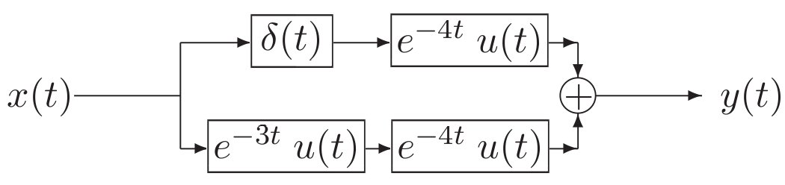

The poles and zeros of $\frac{{\bf s}+2}{{\bf s}+3}$ are, respectively,
Solution: See Section 3-2.
Test 3.4
The inverse Laplace transform of
$\displaystyle
\frac{{\bf s}^2+2{\bf s}+2}{{\bf s}^2+2{\bf s}+1}
$ is:
Solution:
$\displaystyle
\frac{{\bf s}^2+2{\bf s}+2}{{\bf s}^2+2{\bf s}+1}=1+\frac{1}{({\bf s}+1)^2}.
$ Now use
entries #1 and #6 of Table 3-2, which are:
1
$\displaystyle \delta(t)$
$\displaystyle 1$
6
$\displaystyle te^{-at}\;u(t)$
$\displaystyle \frac{1}{({\bf s}+a)^2}$
Test 3.5
The inverse Laplace transform of
$\displaystyle
\frac{1+j}{({\bf s}+3+4j)}+\frac{1-j}{({\bf s}+3-4j)}
$ is:
Solution:
$1+j=\sqrt{2}e^{j45^\circ }$ in
entry #3 of Table 3-3, which is
The input to an RC circuit with RC $=1$ s and the capacitor
initially charged to 1 V is $u(t)$. The capacitor voltage is:
Solution:
The zero-state response is the
step response $(1-e^{-t})\;u(t)$. The zero-input response is the
capacitor discharging, namely $e^{-t}\;u(t)$. The total response is
the sum given by $u(t)$.
Test 3.13
The zero-state response of an RC circuit with RC $=1$ s is a
function $y_{\rm ZSR}(t)$. The capacitor is now initially charged
to 3 V. The total response of the RC circuit is:
Solution:
The total response can be
partitioned into the sum of the zero-state response and the zero-input
response. The zero-input response is simply the initial capacitor
voltage decaying, which is $3e^{-t}\;u(t)$.
Test 3.14
$\sqrt{2}\cos(2t+15^\circ )\to$
${\bf H}({\bf s})=\frac{{\bf s}}{{\bf s}+2}$
$\to$ ? (initial conditions are zero)
Solution:
From Eq. (3.122), the frequency
response function is ${\bf H}({\bf s})|_{{\bf s}=j\omega}$. Here,
$\displaystyle
{\bf H}(j2)=\frac{j2}{2+2j}=
\frac{2e^{j90^\circ }}{2\sqrt{2}e^{j45^\circ}}=
\frac{e^{j45^\circ }}{\sqrt{2}}.
$
The response to $\sqrt{2}\cos(2t+15^\circ )$ is then
$\frac{\sqrt{2}}{\sqrt{2}}\cos(2t+15^\circ +45^\circ )=\cos(2t+60^\circ)$.
Test 3.15
The interconnection of LTI systems shown below is equivalent to
a single LTI system with impulse response $h(t)=$?

Solution:
Using properties of cascade and
parallel systems interconnections:
$\displaystyle
h(t) = (e^{-3t}\;u(t))*(e^{-4t}\;u(t))
+\delta(t)*(e^{-4t}\;u(t))
$
$\displaystyle
= e^{-3t}\;u(t)-e^{-4t}\;u(t)+e^{-4t}\;u(t)=e^{-3t}\;u(t).
$
Much easier:
$\displaystyle
{\bf H}({\bf s})={\cal L}\{h(t)\}=
\frac1{{\bf s}+3}\frac1{{\bf s}+4}+(1)\frac1{{\bf s}+4}=
$
$\displaystyle
\frac1{{\bf s}+4}
\left[1+\frac1{{\bf s}+3}\right]=
\frac1{{\bf s}+4}\frac{{\bf s}+4}{{\bf s}+3}=\frac1{{\bf s}+3}.
$
Test 3.16
The inverse Laplace transform of
$\displaystyle
{\bf H}({\bf s})=\frac{{\bf s}+4}{({\bf s}+3)^2}
$ is:
Solution:
$\displaystyle
\frac{{\bf s}+4}{({\bf s}+3)^2}=\frac1{{\bf s}+3}+\frac1{({\bf s}+3)^2}.
$ So
$h(t)=e^{-3t}\;u(t)+te^{-3t}\;u(t)$.
Given that
$\displaystyle
{\bf X}({\bf s})=\frac{{\bf s}^2+2{\bf s}+3}{4{\bf s}^3+5{\bf s}^2+6{\bf s}}
$
and $x(t)={\cal L}^{-1}\{{\bf X}({\bf s})\}$, what is $x(0^+)$?
Solution:
By the initial value theorem Eq. (3.31),
$\displaystyle
x(0+)=\lim_{{\bf s}\to\infty}{\bf s}\;{\bf X} ({\bf s}),
$
which leads to $\frac1{4}$.